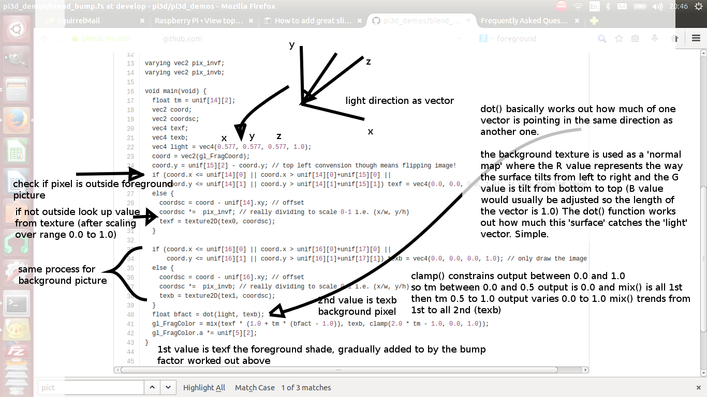

Frequently Asked Questions¶
Graphics Memory¶
assert s >= 0¶
When starting any demo I get an AssertionError in DisplayOpenGL assert s >= 0
This is generally caused by the graphics memory allocation on the Raspberry Pi being too low (less than 32)
EGL_NO_SURFACE¶
When starting any demo I get an AssertionError in DisplayOpenGL assert self.surface != EGL_NO_SURFACE
This is generally caused by the graphics memory allocation on the Raspberry Pi being too low (less than 64) It has also been caused by extra shared libraries such as /usr/lib/arm-linux-gnueabihf/libEGL.so.1 and symbolic links being added by other programs see five questions below...
Start then shut down¶
When running ConferenceHall (or other program with a large number of textures) it appears to start ok then shuts down (byebye 3 message) just before the main display loop should appear.
This is generally caused by the graphics memory allocation on the Raspberry Pi being too low (less than 128)
Is there a way of using memory more efficiently when using large images?
There are two features added to the Texture class from v2.9 The first allows ‘normal’ CPU memory to be released after the GPU texture sampler has been created: use the argument pi3d.Texture(free_after_load=True)
The second feature allows more highly compressed texture formats to be used for the GPU storage. The default is GL_RGB or GL_RGBA for jpg or png style textures respectively which take three or four bytes. pi3d.GL_RGBA4, pi3d.GL_RGB5_A1, pi3d.GL_RGB565 are alternatives that use only two bytes and give quite acceptable colours for most things. Use for instance pi3d.Texture(i_format=pi3d.GL_RGB565)
_tkinter.TclError¶
When starting TigerTank, ConferenceHall or MarsStation demos I get an error _tkinter.TclError: couldn't connect to display ":0"
tkinter is trying to use a display provided by the X-server. Run startx from the command line.
PiStore install¶
taking too long¶
I am trying to install using PiStore but it’s been running for hours with no sign of completing.
The PiStore install adds pip and Pillow which take quite a bit of the cpu resources. It could be that you have set the graphics memory share to the higher level needed to run pi3d. In the long run it will be quicker to abort the installation, remove the half installed pi3d, use raspi-config to set the graphics memory low, re-install pi3d, then set the graphics memory back up again!
Doing more with PiStore installation¶
I have installed using PiStore and run the demos from the Menu. Now I would like to play around for myself.
There is a PiStore button next to launch that lets you see the source code. It should open a file browser window to /usr/local/indiecity/InstalledApps/skillmanmedia/Full/pi3d_demos which is a very obscure location and also protected against modification. To play around with the code you should either copy the whole of this directory to your home directory (i.e. so you have /home/pi/pi3d_demos/) or clone or download the demos from http://github.com/pi3d/pi3d_demos (which will include a couple of other demos excluded from PiStore because they use very large resource files.)
Before going too far it would be a good idea to ReadMe
GLX DRI2 not supported or failed to authenticate¶
When I try and run the demos I just get a load of error messages such as libEGL warning: GLX/DRI2 is not supported/failed to authenticate etc
The chances are this is because ‘something’ (such as gedit) has installed mesa which added its own versions of libEGL and libGLESv2. If you run:
$ sudo find / -name libEGL* $ sudo find / -name libGLESv2*on the Raspberry Pi you should just get /opt/vc/lib/libEGL.so and /opt/vc/lib/libGLESv2.so if other ones turn up i.e. /usr/lib/arm-linux-gnueabihf/libEGL.so.1 you could try creating symbolic links for them all like this:
$ sudo ln -fs /opt/vc/lib/libEGL.so /usr/lib/arm-linux-gnueabihf/libEGL.so $ sudo ln -fs /opt/vc/lib/libEGL.so /usr/lib/arm-linux-gnueabihf/libEGL.so.1 $ sudo ln -fs /opt/vc/lib/libGLESv2.so /usr/lib/arm-linux-gnueabihf/libGLESv2.so $ sudo ln -fs /opt/vc/lib/libGLESv2.so /usr/lib/arm-linux-gnueabihf/libGLESv2.so.2NB on other systems such as Debian, ubuntu etc the “good” files will not be in this location, they will be somewhere like /usr/lib/x86_64-linux-gnu/mesa-egl/ so you have to alter the commands accordingly Use the actual paths as listed by find. After creating new symbolic links you will need to run:
$ sudo ldconfigThis issue is being looked into by the maintainers of Raspbian so, hopefully, it will be fixed in later releases.
Runtime errors¶
Crashing¶
My RPi Crashes or reboots when I try and run a demo.
Any program using a loadable texture, which includes nearly all the demos, requires the Python Imaging module (PIL). Additionally, some demos require tk.
See the ReadMe for information on how to install these packages.
white screen¶
I see nothing but a white screen.
Possibly something has gone wrong with an opengles function, sometimes there might be an error message in the terminal such as failed to create display. This could be caused by running out of gpu memory (see ReadMe for how to set up memory split).
Occasionally multi-threaded applications can cause this problem if an opengles function call is made not from the main thread. If you encounter this, please contact the pi3d team so we can protect against this in future.
black screen¶
I see nothing but a black screen.
Possibly something has gone wrong in a shader, such as using a shader requiring texture coords (i.e. mat_relfect) on a Model exported with no uv mapping.
There may be a line number reference output by the shader compiler in the terminal window. It is great fun experimenting with shaders but they are ?£#% taciturn beasts to debug! The problem could be caused by sending some bad render setting to a shader.
only background¶
I see nothing but the background.
You will need to set background to non-transparent and a color not equal to black or white to determine if this is happening.
Either the shape is behind the camera, too far away, is outside the field of view, is too small, too large or the polygons are facing away from the camera. Often this is because you are actually inside the object.
Try using the Camera.point_at([x,y,z]) function (see demos/ClashWalk.py for use) or move and rotate the object and camera. Sprite and ImageSprite shapes are one sided so cannot be seen from behind, try using a Plane instead
Prior to v2.9 of pi3d there was a bug that stopped shapes with very large numbers of vertices rendering at all (c. 25000). Upgrade to a version post 2.9 to see if this fixes the problem.
unlit silhouettes¶
I see only black silhouettes against the background.
You may be trying to use a shader that requires light but there isn’t any, or it’s turned down too low. Try switching to a ‘flat’ shader to check.
Alternatively, if it’s a shape you have generated such as a Lathe or a Model, the normal vectors might be pointing in the wrong direction. Try re-generating the shape, the path you use for the Lathe needs to start at the top of the object and there are functions in most 3D modeling applications to recalculate normals, or force them to point outwards.
Mouse not working¶
The demo loads but the mouse doesn’t move the camera as it’s supposed to.
If this only happens on demos using the event library (such as Silo.py) then it could be the hardware configuration is pretending to be something it isn’t. It’s not uncommon for keyboards to say they are mice or joysticks.
If you have a mouse combined with a keyboard (to save on USB slots) then you might need to use get_mouse_movements(1). If you have problems with a device or inputs using the event system it’s a good idea to run python FindDevices.py from pi3d/event/ - this will give you lots of additional information.
There is also an application demos/TestEvents.py that you can run to find what information is being returned by your input devices. In some circumstances you might need to modify the values returned by the pi3d/event/Event.py InputEvents methods. TODO at the moment this involves hacking the file but it will use a lookup table.
When running on my laptop (lenovo T420, ubuntu 13.10), occasionally, the mouse doesn’t work with the event input, but starts to do after running demos/TestEvents.py and changing the number in get_mouse_movements() a few times. It’s not clear what causes this but it might be when the USB mouse is plugged in after the computer has been booted up.
See also in the section Permission denied below
cbreak error¶
When I try to run a demo I get an error ending curses.cbreak() error: cbreak() returned ERR
The chances are that you are trying to run python directly from the IDLE editor. Although IDLE works fine for most things, it seems to have issues with the curses module that is used for keyboard input and is incorporated in pi3d. Try running the demo from the command line. Geany seems to run ok on the Raspberry pi and has python highlighting and context suggestions.
Optional arguments¶
It appears from the demos that there are some arguments that are optional. For example, can a Shape be drawn without specifying a shader and a texture?
There are (almost too) many ways to set Shapes up to draw. The draw method needs to have a Shader, a Light and a Camera specified but if you neglect to create a Light and Camera when you first draw a Shape it will generate ‘default instances’ which most of the time are just what you want. (These default instances can be accessed to change settings such as color or direction for a Light or field of view for a Camera by using the syntax: Camera.instance().
However the default instance of Shader is mat_light which uses the ‘self color’ of the Shape (defaulting a neutral (0.5, 0.5, 0.5)) as it would be messy to try to figure out if or what Textures to use. Generally you choose the Shader to do the kind of rendering you want, but you can feed that in by various means, many of which also cater for specifying the Texture(s) to use at the same time:
Set them directly in the Buffer array - the other methods are really just wrappers for this i.e.:
myshape.buf[0].shader = myshader myshape.buf[0].textures = [mytex, normtex, refltex]Include them at draw time:
myshape.draw(myshader, [mytex, normtex, refltex], 1.0, 0.1)Set them beforehand (probably the most usual way):
myshape.set_draw_details(myshader, [mytex, normtex, refltex], 1.0, 0.1)For Model objects the ambient texture or material shade will normally be defined in the 3D object file (egg or obj/mtl) In these cases you could use:
myshape.set_shader(myshader) ... myshape.set_normal_shine(normtex, ntiles..) # leaves the first texture if there ... myshape.set_material(mtrl)
Blending¶
How can I blend objects, why do objects vanish when they go behind a transparent object and other questions to do with transparency (or apha property)
Transparency of Shapes can be altered by 1. the set_alpha() method 2. the alpha value of pixels in a png type image file 3. alpha value of the fog. The blending of the pixels with alpha less than 1.0 is controlled by setting Texture.blend to True or False.
The way that transparency is handled is quite hard to understand. Here is some good information http://www.opengl.org/wiki/Transparency_Sorting
The graphics processor has a global setting to enable blending that is switched on or off as each Shape is drawn, allowing or preventing the pixels to be blended with whatever’s behind them. In pi3d this can be controlled by setting the blend=True argument when the Texture is created or at a later point by mytexture.blend = True In addition to this setting there is a check in the draw() method so that blend is enabled when alpha is set to less than 1.0.
When the gpu is rendering an object there is a depth buffer that holds information on how far from the camera each pixel has been drawn. Because of this it is normally optimal to draw foreground objects first as there is then less of the background to fill in. If the background was drawn first then the same pixel might have to be redrawn several times as the gpu found something else nearer to the view point. However the gpu doesn’t take into account the transparency of the pixel when it’s deciding if something is nearer or further away, so for blending you have to draw things on top of other things...
Which sounds obvious but to give an example; if a slideshow tries to blend between two images, one drawn in front of the other:
If you first draw the canvasFront (z=0.1) with alpha=0.1 then draw the canvasBack (z=0.2) with alpha=0.9 the result will be a very faint image on canvasFront and nothing on canvasBack. Wrong!
i.e. canvasBack always has to be drawn first and if the application is purely fading from one image to another it can leave canvasBack at apha=1.0 (i.e. default value) and just increase then decrease the alpha of canvasFront
In addition to blending, when the Shader is rendering an object it discards some pixels without drawing anything at all. The decision is based on the alpha value of the pixel as read from the Texture. If blend is True then pixels with alpha < 0.05 are discarded if blend is False then pixels with alpha < 0.6 are discarded. This allows objects to be drawn after nearer objects but still be seen through ‘holes’ in the image. i.e. the trees in ForestWalk
I want to use pi3d on the Raspberry Pi at the same time as other applications that use the dispmanx display surfaces (omxplayer, wayland, kivy etc) how can I set the layer to be in front or behind.
There is an argument to Display.create(...layer=0) that you can alter to change the order of layers.
Materials¶
All the demos use images to create the surface patterns for shapes. Is it possible to define a material color.
The method myshape.set_material((0.9, 0.4, 0.0)) can be used (the default is (0.5, 0.5, 0.5)) but to render using this you need to use an appropriate mat_ shader:
myshape.set_draw_details(shader, []) # shader = Shader('mat_flat') uses no lighting myshape.set_draw_details(shader, []) # mat_light uses a light myshape.set_draw_details(shader, [bumptex], 4.0) # mat_bump uses light and normal map myshape.set_draw_details(shader, [bumptex, shinetex], 4.0, 0.2) # mat_shine uses light, normal map, reflection textureand one demo does use material color: Shapes.py look at the code for the wine glass. Also, there is now a default instance for Shader so if you try to draw a Shape without specifying a Shader it will load and use mat_light which gives 3D shading but requires no Textures.
joysticks etc¶
How do I use a joystick, gamepad, xbox controller etc with a pi3d application?
Often these will just work with the event module when plugged into the USB, sometimes you may need to use a different InputEvents method, for instance with an xbox 360 you get the left joystick from get_joystickB3d() Also you would need to install the driver and start it running first:
sudo apt-get install xboxdrv sudo xboxdrv -s -i 0See also in the section Permission denied below
Making 3D models¶
How do I make my own 3D model to load into pi3d?
You will need to ‘make’ one on a bigger computer using 3D software such as blender. This falls outside the scope of this FAQ but your best option is to export the model as an obj file. In Bl2.6 options I specify:
Apply Modifiers (default) Include Edges (default) Include Normals (tick this) <<<<<<<<<<<<<<<<<<<<< * Include UVs (default but see below) Write Materials (default) Object as OBJ Objects (default) Forward -Z Forward (default) Up Y Up (default) these last two will mean that.. Blender.x=>pi3d.x, Blender.y=>pi3d.z, Blender.z=>pi3d.y with no reflection of whatever you design* If you export without getting blender to Include Normals then pi3d will have to generate them when the model is loaded. This is not a good idea for several reasons: It will be slower to do on the pi then on a ‘big’ computer, it will have to be done every time the model is loaded rather than just once, it will not give the fine control available in blender to define the sharpness of edges.
NB You will need to define uv mapping even if you define a material color and don’t intend to use a texture but might want to use a normal mapping shader. To do this in blender you need to tab to edit mode, select all vertices (a), unwrap (u, Unwrap). If the model has multiple objects you will need to do this for each one. After you export you may need to edit the mtl file so the relative path to the image is correct for their locations on the pi. In programs such as blender it is also possible to use a more detailed (high polygon) model to create a ‘normal map’ image that can be used to give surface detail to the model in pi3d. Quite technical but lots of instructional videos on youtube!
2D images¶
How to use 2D images¶
Can I use pi3d for 2D images?
There are various ways of doing this. The easiest way is to use the image to texture a simple rectangle. The simplest shape to do this is the Sprite which is also utilised by the ImageSprite shape to allow the texture to be specified as it is created. The Plane object is similar but is two sided. The advantage and disadvantage of this method is that images will be different when viewed from different locations.
If you specify an orthogrphic camera (set the argument is_3d=False) then there will be no perspective (the image will not get smaller as it moves away from the camera) and each unit of the dimensions of the object will be one pixel on the screen. With both these methods the shape can be rotated, moved and scaled in all dimensions.
You can also use the shader 2d_flat which takes pixels from an image and maps them to the screen, see below. The advantage of this method is that it can use the even simpler Canvas object and it always stays in the same place relative to the camera so you only need one camera, which can be the default one that you don’t have to bother creating. See below.
From v1.14 the Buffer.re_init() method (see below under Is it possible to change the shape...) allows vertices to be moved around quite easily. These vertices can be rendered as points and the Shader can be made to draw an image or part of an image at each point. This technique allows much larger numbers of sprites to be drawn per frame, especially if the fast array processing power of numpy is used as well. See the demos SpriteBalls.py and SpriteMulti.py
nearness of 2D relative to 3D¶
How do I display 2D images in front of a 3D scene? (or behind, for that matter)
Either draw them onto a Canvas object using the 2d_flat shader or create two cameras one 3D and one 2D and assign the relevant camera to the types of objects you want to be drawn by each method. You can move the 3D camera around the scene but leave the 2D one stationary, that way you won’t have to keep moving and rotating the 2D objects to keep them in front of the camera.
Orthographic (2D) cameras will render objects with a z value that is severely non linear and does not relate in a simple way to the z values for the perspective camera. Generally 2D objects will be in front of objects rendered by perspective (3D) cameras unless you assign z values in the thousands. Too large a z value (> 10000), though, and they will disappear beyond the ‘far plane’. If z_o is the z value of a Shape viewed with an orthographic camera and z_p is the z value of a Shape viewed with a perspective camera then their relative distances during rendering by the Shader (i.e. which obscures the other) follows:
z_p = 10000 / (10000 - z_o) # so z_o of 9000 gives z_p of 10 z_o = 10000 * (1 - 1/z_p) # so z_p of 500 gives z_o of 9980If you create a camera it will become the default instance so if you need more than one you need to explicitly create them, and it’s a good idea to assign the one you want to each object as an argument while the object is being created.
Default fog distance¶
I’ve moved my yellow plane behind other objects by setting z=9900 and viewing it with an orthographic camera. But it has become grey and slightly transparent!
The default Fog distance was set up before the orthographic camera had been implemented. It is mid grey and ramps up to full strength at z=5000. From v1.12 This will be increased but in the mean time you can:
myshape.set_fog((0.5, 0.5, 0.5, 1.0), 30000)
Pixel perfect¶
How do I display an image exactly without anti-aliasing or smoothing i.e. pixel perfect?
This can be done by using the 2d_flat shader and spcifying when the Texture is loaded that mipmap=False. Because this is a global setting it will be overwritten by whichever Texture is the last to be loaded.
anti-aliasing¶
Where I have one shape in front of another with contrasting colors can the diagonal line be anti-aliased to prevent ‘steppyness’?
This can be done when the Display is created by setting the samples argument to 4:
DISPLAY = pi3d.Display.create(x=150, y=150, samples=4)Generally the edges don’t look too bad, there is a small processing cost associated with this sampling and there is a recorded instance of the sampling causing an error when running pi3d on vmware on a mac.
Texture blurring¶
Some of my Textures look a bit blurred or pixely.
Early GPUs had to have image sizes of powers of 2 pixels. i.e. 2,4,8..1024,2048 because of the algorithm used for texture sampling, but modern ones can manage with any dimensions. With the raspberry pi we have found that some widths can cause rows of pixels to be offset unless they fall on certain sizes (below). If the image width is a value not in this list then it will be rescaled with a resulting loss of clarity
Allowed widths 4, 8, 16, 32, 48, 64, 72, 96, 128, 144, 192, 256, 288, 384, 512, 576, 640, 720, 768, 800, 960, 1024, 1080, 1920
Log messages¶
When the demos start there is sometimes a message in the terminal looking like: 2013-08-19 15:36:46,232 INFO: __main__: Starting CollisionBalls Where does that come from and what does it mean?
The Log module is started by several of the basic classes (Buffer, EventStream, Display, Loadable, Mouse, parse_mtl, Shader, Screenshot) This means that all programs using the pi3d modules will create a Log as a by-product. It can be used for debugging and recording errors.
Moving shapes together¶
How do I keep two components (Shapes) ‘joined together’ as they pitch, roll and rotate (yaw), like the TigerTank does with its body, turret and gun?
This can be done automatically by adding Shapes to other Shapes.children lists which can be done using the Shape.add_child() method. All transformation applied to a Shape will then be relative to its parent and will be inherited its children. See the drawTiger function in TigerTank.py.
Angle of bank¶
I want to give my shape an angle of bank (z-axis rotation) which it maintains as it turns (y-axis rotation) - like an aeroplane. However the z-rotation is always relative to the absolute frame of reference so the shape pitches backwards and forwards as it turns. How do I make the frame of reference rotate with the shape?
This is because of the order of the transformations done prior to redrawing the scene (z, then x, then y). You have to work out what the pitch and roll would have to be prior to rotating them about their own y axis! To see what I mean watch the behaviour of the tanks in demos/TigerTank.py You have to figure out the ‘slope of the ground’ so that when your aeroplane (or boat) is rotated it ends up with the correct pitch and roll. For a shape with zero pitch you can use something like:
absheel = degrees(asin(sin(radians(heel)) * cos(radians(heading)))) abspitch = degrees(asin(-sin(radians(heel)) * sin(radians(heading)))) hull.position(xm, ym, zm) hull.rotateToX(abspitch) hull.rotateToY(-heading) hull.rotateToZ(absheel)And see the DogFight.py version which has an extra degree of freedom.
Moving vertices of existing Shape¶
Is it possible to change the shape of an object once it’s been made?
The most efficient way is to use the scale(sx, sy, sz) method. However, this obviously limits the shape changing that can take place. If the shape needs to be changed more than this then it can be remade as a new instance to replace the old one. (At one stage it was necessary to clear the previous opengles buffers using the unload_opengl() method before destroying the old shape to stop a graphics memory leak. This issue seems to be fixed but if you run into memory problems it might be worth trying this. Plus, obviously, report it to us!)
The alternative (faster, better) way of doing it is to use the Buffer.re_init() method which takes arguments to set new values for pts (i.e. vertices), texcoords and normals. These are passed as lists of xyz or uv lists or tuples or better, two dimentional numpy arrays. An offset argument can also be passed to allow only a section of vertices (normals or texcoords) to be modified. re_init() can’t change the number of vertices, just move them around. See the demos IceGrow.py and ProceduralTerrain.py.
Slow animation¶
Sometime, when I move the mouse or the program is loading a file from disk, everything slows down or freezes.
The Display has a frames_per_second argument and if you set this lower than the flat out rate it will give the processor some ‘slack’ to accomplish other jobs.
To do things like file loading in the background (for instance, preloading an image or Shape so that it can instantly appear later) you need to use Python’s threading - Slideshow_2d.py is an example.
Slow on non-raspberry pi machine¶
I am running pi3d on a non-raspberry pi Linux machine but it’s running at a very slow frame rate.
Probably the GPU can’t run the OpenGL2+ code that mesa interprets from the pi3d OpenGLES2 commands. Check the specification for the graphics card. lspci -v and feedback.wildfiregames.com/report/opengl/
unresponsive mouse movement¶
Using python3 and the InputEvents mouse input (Silo and DogFight demos) I get very ragged and unresponsive camera movment.
This should be fixed as of v1.5, try upgrading to the latest version of pi3d
Permission denied¶
Some of the demos on a non-raspberry pi Linux machine work fine but other don’t run and give an error:
IOError: [Errno 13] Permission denied: u'/dev/input/mice'
what is the cause of this
The default Mouse gets its info from the operating system file described in the error message. This requires it to be run from root, you can do this by sudo python ForestWalk.py.
Alternatively, from v2.7, there is an argument to Display.create() use_pygame=True which will use mouse and keyboard input from a pygame display - the system that is used on Windows. See also below...
NB A better fix for the access to /dev/input/ on laptops etc it to add your user to the input group. On this ubuntu 14.04 computer I did:
$ getent group # to see if there was an existing group 'input' which there wasn't $ sudo groupadd -f input $ sudo gpasswd -a USERNAMEHERE input $ sudo nano /etc/udev/rules.d/pi3d.rules # new file to which just had this line SUBSYSTEM=="input", MODE="666" # restart computerThis should also get the input events system working as used in Silo and allow joysticks and xbox controllers to be used. Thanks to Piotr Bednarski for sorting this out.
Full Screen¶
I would like to have a fullscreen frameless/borderless window for pi3d when running under x/mesa. It should looks just like it does for the RPi.
If the use_pygame=True argument is used for Display.create() and no w, h, x, y values are given then the pygame supplied drawing surface will be full screen without borders.
Post processing¶
How do I do post-rendering processing on a scene, such as blurring, edge detection or fancier effects such as oil painting.
There is a class PostProcess that can be used to render a scene to a texture. The Post.py demo shows a simple 3x3 convolution matrix shader and there are a host of post process filter shaders that are in the pi3d_demos/shaders directory. These wll be loaded in turn by FilterDemo.py but the pi will run out of graphics memory if you leave the full list in. For more complicated effects it’s over to you!
PostProcess class¶
OK the example for post processing (Post.py) is quite hard to follow how exactly does the PostProcess class work.
PostProcess inherits from Texture (via OffScreenTexture) so you can use an instance of it anywhere you would use a texture, i.e. you could uv map it onto any other shape or use it as a bump or reflection map. Or use it with your own shader to do something I haven’t thought of. PostProcess.sprite is a Sprite shape that can be used just as any other Shape in your program, you could rotate it or change its alpha value or z location to draw it in front of other objects. There is also a 2D camera created in PostProcess which is used to draw the sprite at full screen using the saved texture and the shader you supply in the constructor or post_base if you don’t supply one.
PostProcess.draw({48:1.1414, 49:2013, 50:0.0}) will set the unif array in PostProcess.sprite as unif[48] = 1.1414 unif[49] = 2013 unif[50] = 0.0 you can then access these values as uniform variables in your shader as vec3 unif[16][0] unfi[16][1] unfi[16][2]. If the array indices are contiguous you could do the same thing using PostProcess.sprite.set_custom_data(48, [1.1414, 2013, 0.0]) or even PostProcess.sprite.unif[48] = 1.1414 etc
I see no reason why you shouldn’t do something like: render the scene to a texture once a second draw it off-screen using a shader to extract edges as dayglo on white, blur them to a second texture, draw this onto a foreground sprite fading from alpha 0 to 1 back to 0 over 1s cycle. Use a different shader to draw the original texture onto a spherical surface that gradually changes shape in the background. etc etc.
Is it possible to access the PostProcess image as a numpy array¶
In order to get the pixels ‘out of’ the GPU memory into CPU space, the only way I have found is to do something like:
import numpy as np
import ctypes
...
ntex = np.zeros((post.iy, post.ix, 4), dtype=np.uint8) # make an empty array of the correct size
...
# inside the drawing loop. If you are offscreen rendering then you need to do this
# BEFORE you switch back to the normal view with end_capture
pi3d.opengles.glReadPixels(0, 0, post.ix, post.iy, pi3d.GL_RGBA, pi3d.GL_UNSIGNED_BYTE,
ntex.ctypes.data_as(ctypes.POINTER(ctypes.c_short)))
But glReadPixels is relatively slow compared with rendering to and then drawing with a renderbuffer object so don’t expect a fantastic framerate.
python v. shader unif arrays¶
And why does python set Shape.unif[48] but the shader use vec3 unif[16][0].
On the shader side it’s really efficient to define variables as vec3, vec4, mat4 etc. and at one stage I tried doing a lot of the matrix manipulation in the vertex shader. There were pros and cons but in the end I found that using python’s numpy library was the best bet. But in the mean time I had started storing much of the shape information in a form that allowed it to be accessible by the shader i.e. location x,y,z was vec3 unif[0] in the shader, rotation was vec3 unif[1], scale unif[2], origin offset unif[3] etc. Although I no longer needed these for normal rendering I thought that they may come in useful for someone at some stage so I just left them. I only needed to pass one array pionter so there was no cost to having 60 floats available!
Meanwhile back in the python description of the Shape I had to make the unif array a ctypes.c_float array and that seemed to have to be one-dimensional. So after a long story unif[16][0] in the shader is (same name but different) unif[16*3 + 0] in python
Blend shaders¶
How do the blend shaders work as used in the PictureFrame demo
These shaders are based on the 2d_flat shader (as mentioned above) that uses the screen coordinates of each pixel, rather than the interpolated coordinates of 3D polygon uv values, to look up the color values. The main differences from 2d_flat are 1. There are two textures passed to the shader 2. There are two sets of x, y, w, h and screen height values passed to the shaders (one for each texture) 3. There is a time value passed to the shader varying from 0.0 to 1.0 to control the proportion of blending 4. There is a blending function!
If you look at the code for blend_bump.vs (and the other blend vertex shaders) you will see that it calculates two vec2 varying values that are passed to the fragment shader. The sole reason for doing this is relative expense of dividing by a variable compared with multiplication in the fragment shader. The values are used to scale the pixel locations to texture lookup locations.
All of the fragment shaders then operate in a fairly similar way: pick up the fading factor (tm = unif[14][2]), define coord as the pixel location on the screen, for the foreground and background textures check if the pixel falls outside the texture, if it doesn’t then look up the RGBA value from the texture.
Having got the foreground and background pixel values there is then a process of combining them which generally involves calculating a factor dependent on some or all of a) pixel values b) x,y location on the screen c) tm. Using the factor in a mix() function.
bump: generates a factor as if the background texture was a normal map to modify the foreground as it blends from one to the other
burn: compares the brightness of the background pixel with a sliding threshold to determine how much to mix the foreground and background false: creates a false middle color using factors acting on the foreground and background RGB values and blends to and from the mid color

holes: uses the distance from a grid of points to determine the proportion of mixing star: calculates the pixel position in polar coordinates (angle and radius) then does some trig to determine the blend proportion
Points¶
How can I render points like a star field or sparks from an explosion.
If you use the method set_point_size() on a Shape to a value other than 0.0 then the vertices of the Shape will be rendered as points. The size will actually vary with distance but will be the size you specified at 1 unit of distance from the camera.
pi3d.Points can be used to render points using the mat_flat shader or special shaders as used in the demo SpriteMulti.py
Lines¶
How can I render lines such as graphs or axes or the ‘wireframe’ version of a Shape.
If you use Shape.set_line_width() then the the Buffer objects in the Shape will have their draw_method set to GL_LINE_STRIP which will join all the vertices as point on a line. There is an optional argument closed that defaults to False which can be used to join the last vertex back to the first (by setting draw_method to GL_LINE_LOOP). To create your own lines you would need to make a list of (x,y,z) vertices and an element array to join them together and pass them to the Buffer constructor. The pi3d.Lines class does this for you.
It is possible to create multiple Buffers within a Shape and set some as faces (draw_method set to GL_TRIANGLES) and some as points or lines. You can set different Shaders for different Buffers from v2.6
Minimal SD card¶
How can I set up an SD card without all of Raspbian’s clutter that will boot quickly and allow me to run a dedicated pi3d application.
This is what I did to get a version of the PictureFrame demo running on a Raspberry Pi that I wanted to just do this job without the need for Wolfram, Scratch or even the X11 desktop system.
1. The Raspberry Pi Foundation hosts a ‘stripped down’ version of Raspbian Jessie LITE avaliable at https://www.raspberrypi.org/downloads/raspbian/ which can be downloaded and burned to SD following the instructions there.
2. Start the Raspberry Pi logging in as user pi, password raspberry then:
$ sudo raspi-config - boot options: console login as pi automatically - internationalisation options: select relevant city - expand file system - (optional) change user password - advanced: increase graphics memory to 128 - advanced: enable SSL3. Install just the software to run the application:
$ sudo apt-get update $ sudo apt-get upgrade $ sudo apt-get install python3 $ sudo apt-get install python3-numpy $ sudo apt-get install python3-pillow $ sudo apt-get install python3-pip $ pip install pi3d4. Download the modified project from github:
$ wget https://github.com/paddywwoof/pi3d_pictureframe/archive/master.zip $ unzip master.zip $ rm master.zip $ mv pi3d_pictureframe-master pi3d_pictureframe $ cd pi3d_pictureframe5. Checkout the excellent documentation by Tathros on which I have based these instructions. The main differences are getting it to work in console mode, without the need for a desktop environment:
### screen application needed to show output run from crontab ###### $ sudo apt-get install screen ### turn off screensaver ########################################### $ sudo nano /etc/kbd/config ... BLANK_TIME=0 ... ... POWERDOWN_TIME=0 CtrlX,Y,Rtn ### set up wifi (you will need dongle if RPi < 3) ################## $ sudo nano /etc/wpa_supplicant/wpa_supplicant.conf ... ctrl_interface=DIR=/var/run/wpa_supplicant GROUP=netdev ... update_config=1 ... ... network={ ... ssid="YOUR_SSID" ... psk="YOUR_PASSWORD" ... } CtrlX,Y,Rtn ### auto start and stop - only do after checking everything works ## $ crontab -e ... # turn off screen at 21:00 ... 00 21 * * * touch /home/pi/pi3d_pictureframe/stop; /opt/vc/bin/tvservice -o ... # turn on screen 07:00 ... 00 07 * * * /opt/vc/bin/tvservice -p; /bin/chvt 2; /bin/chvt 1; screen -dmS PICFRAME /usr/bin/python3 /home/pi/pi3d_pictureframe/PictureFrame.py ... # kill any extra python processes that might have crept in ... 00 04 * * * killall python3 ... # switch on at start up ... @reboot screen -dmS PICFRAME /usr/bin/python3 /home/pi/pi3d_pictureframe/PictureFrame.py CtrlX,Y,RtnIn these instructions the ``... `` at the start of lines represents the fact this is text inside a file and shouldn’t be actually typed in! Also you need to change the WiFi credentials to match your router. In the picture_getter.py script you will need to put in the email server, user and password for picking up images.
pypy¶
Does pi3d work with pypy
pi3d relies on some of the functionality and speed of numpy and this only really became useable as of pypy-2.2 and I have managed to get pi3d working to some extent with that. At the moment that isn’t the current version you get with apt-get so these were the steps I took:
1. download the relevant version from http://pypy.org/download.html for your machine (Ubuntu, raspbian etc) extract it into a new directory i.e. /home/me/pypy-2.2.1-linux64
2. in a terminal:
sudo apt-get install pypy-dev3. download and install pypy-numpy so it’s also in a subdirectory of pypy-x.x.x-etc I did this cd to that directory then using:
git clone https://bitbucket.org/pypy/numpy.git cd numpy sudo ../bin/pypy setup.py install4.* download Pillow from https://pypi.python.org/pypi/Pillow and extract it into its own subdirectory of pypy-x.x.x-etc i.e. /home/me/pypy-2.2.1-linux64/Pillow-2.2.1
5.* download http://python-distribute.org/distribute_setup.py to pypy-x.x.x-etc/bin and run it:
sudo ./pypy distribute_setup.py6.* either cd to pypy-x.x.x-etc/bin and run:
sudo ./easy_install Pillow7.* or cd to the Pillow-x.x directory and run:
sudo ../bin/pypy setup.py installI did different permutations of these things but confused myself as to which I was ‘really’ doing (by occasionally forgetting to type ./pypy and thereby running a debian package version that was also installed) so some of these steps are redundant. Also other steps may be missing.
At the moment (Dec13 https://github.com/tipam/pi3d/commit/ce5febc6693115872c7e4653dfea503e029fa0d5) the changes to Shape.draw() have been commented out because they look to add some extra processing at an expensive location. If you want to try pypy you will have to swap the two lines (search for pypy to find them)
DIY environments¶
Cube¶
How can I make my own EnvironmentCube images using pictures of my garden or school playground?
Option 1. Using an EnvironmentCube (as the question says) but see below for using a Sphere, which is probably easier.
There are lots of ways of doing this and different software as well as special cameras. However this is the method I have followed using freely available software: gimp and blender (running on a ‘normal’ computer rather than the pi at this stage).
The first half of the job is to get a set of images into a ‘seamless’ band. Obviously you need to have taken a set of pictures that overlap 25% to 50%. In gimp make a new image that is higher and wider than you will need to paste all the images side by side. You will need to have the same image repeated at the left end and the right end.
Open each image in gimp then copy it, go to the new ‘wide strip’ image and paste as new layer. Use the four headed arrow to position each layer so it ‘joins up’. When you put the duplicate left most image at the right end you need to make sure that it is at exactly the same vertical position as it is on the left.
Working down from the top layer add layer masks (default white, full opacity) then using gradient fill tool make the mask fade from transparent to opaque across the overlapping portion. You might need to slightly rotate some images to make them join up nicely from one side to the other.
When it looks perfect (!) merge the layers down then crop the image so there are no gaps at the top and bottom and so the left and right edges join seamlessly. You will probably have to zoom to maximum and choose an easily identifiable pixel. The rectangular selection tool in gimp allows the edges to be dragged to fine tune it. Export the image to jpg or png possibly after reducing to a reasonable size. Have some suitable sky only image to patch into the top of the sphere you will create in blender...
I used blender 2.69, it’s not a trivial application if you’ve not used it before and it might take a bit of effort to figure out what I’m referring to [tab] means tab key, otherwise it’s probably a menu item or an icon in the right hand. Lots of youtube videos to look at. In blender:
1. [del] delete the startup cube
2. Add Mesh UV Sphere, on left tools set Shading Smooth
3. [s] to scale up to about 10x
4. [tab] to edit mode [a] to deselect all vertices. R-click on top vertex the Ctrl-numpad+ to select vertices down to about 45 degrees north (or use [b] and box select) [del] delete vertices. You should now have a sphere with the top cut off
5. [tab] back to object mode then create another sphere at the same location but scale it up very slightly bigger and chop off the bottom but so they overlap just a little.
6. [tab] back to object mode then Add Empty Cube at the same location (NB if you accidentally left click on the view window you will move the starting point marker where new things appear). You should be able to zoom in with the mouse wheel and see this cube inside the spheres.
7. still in object mode right click to select the bottom (inner and larger) sphere. The edge should go yellow to indicate it’s been selected.
8. on the right properties window click the Materials icon (CofG circle 4th from right), then + new.
9. then click the Textures icon (red/white check 3rd from right), then + new, Type Image or movie, Image New browse to the wide horizon image you made, Mapping Projection Tube
10. still in object mode right click on the top sphere, add material and texture exactly as for the bottom sphere but select the patch of sky image mentioned above and choose Mapping Projection Flat
11. in object mode right click on the Empty Cube and add a new Texture (you should see a reduced list of options so it’s 2nd from right in the list)
12. select under Type Environment Map then under Environment Map Static, Mapping Cube and Viewpoint Object Empty
13. in the properties icons select render (camera left most) then under Render press the render button. This should flash up a series of six smaller images then go black!
14. re-select the Texture icon (all of these steps should have the Empty Cube as the selected object) and the little down arrow under Environment Map should produce a drop-down menu with an option to save the image.
The texture can then be used in pi3d with EnvironmentMap type BLENDER. However there will be a sharp line where the edge of the bottom sphere fell. You can smooth this out using clone, repair, blur and blend tools in gimp; be careful not to blur the boundaries between the six images.
Sphere¶
How do I make an Environment Sphere (such as can use the Photo Sphere images created by later versions of Android)
First you need an image very much like the one outlined in the previous question. If you have the software on your phone or tablet to do a Photo Sphere that’s going to be a lot easier but you can do something similar with a series of panoramas as modern cameras can make. The image needs to be twice as wide as it is high using a standard cylindrical projection http://en.wikipedia.org/wiki/Equirectangular_projection
This image is used for a Texture uv mapped to a standard pi3d.Sphere but the Texture needs to have the argument flip=True and the Sphere needs the argument invert=True
If the same image is used as the reflection with uv_reflect or mat_reflect shaders then the correct part of the scenery will be rendered - i.e. behind the camera and transposed left-right, see demo EnvironmentSphere.py.
pickling¶
How can I speed up loading Models. Even quite low polygon counts seem to take ages on the Raspberry Pi
Thanks to Avishay https://github.com/avishorp it is possible to use the python pickle functionality to serialise pi3d Shapes including Model.
There is an example on github.com/pi3d/pi3d_demos LoadModelPickle.py which shows the process but basically:
load the models once normally, create a file (has to be binary for python3) to write to, then pickle.dump(mymodel, f)
subsequently open the file to read from and mymodel = pickle.read(f) the loaded file will have any required Textures included automatically including bump and reflection maps. However the shader will still need to be set with set_shader()
Loading from a pickle file is significantly faster than parsing a wavefront obj file but (because of the less efficient image compression) the disk space used will be much higher.
Strings¶
quick change¶
How to have lots of rapidly changing text on the screen (such as location game-status readouts etc) whithout having to create new String objects all the time (with associated processor load)
This can be done using the String.quick_change() method.
When you first create the string you need to make it big enough to fit in any additional characters you may send to quick_change() subsequently. At the moment it doesn’t cope with multi-line Strings.
There is an example in pi3d_demos/ForestQuickNumbers.py
Why do I get an error when I try call the quick_change() method in my program.
If you get AttributeError: 'Buffer' object has no attribute 'vbuf' then this could be because you are calling quick_change() before the first draw() of the String object. Unfortunately you can’t do this (as at pi3d v2.10) and you will have to alter your code to ensure the draw happens before the change.
FixedString¶
How to have a large amount of text without creating hundreds of extra polygons for the gpu to render?
The String object has a little rectangle for each letter, each of which needs four vertices and two triangles. If the text does not need to be changed then it is better to use the FixedString class. The object inherits from Texture with the provided text drawn onto it. It also creates a simple sprite with four vertices and two triangles that can be used to draw the texture. There are filters that can produce effects such as blurring, outlining and normal map generation.
Texture animation¶
Is it possible to change a texture every frame at a reasonable frame rate? i.e. for displaying a video, a feed from a web cam or an image manipulation program such as OpenCV, Scipy or numpy?
This became much more feasible after v1.4 and more so after v2.1 The Texture class now accepts a numpy array (size (H,W,N) where N is 3 for RGB or 4 for RGBA), remember C arrays are row,col,pixel)
There is also a method Texture.update_ndarray(new_array) that can efficiently switch the image to the new array. See the demo VideoWalk.py which maps a movie onto a shape using ffmpeg.
Profiling¶
How to profile code to find where the bottlenecks are? For example to find if it’s worth doing something complicated with numpy or ‘blitting’ small areas of the screen as in the NumpyBalls demo?
The python profiler cProfile is very easy to use but I have found it struggles to find directories from the code and gives quirky information unless I do something like:
$ cd ~/pi3d_demos $ python -m cProfile ~/pi3d_demos/NumpyBalls.py > result.txt
Desktop or laptop¶
Is it possible to use pi3d on my laptop or desktop computer ideally running windows?
If your computer has a suitable graphics card then you should be able to do this.
windows requires a version of pi3d v2.0 or later see ReadMe Windows
linux is more similar to the Raspberry Pi, also see ReadMe Linux
mac ought to be possible following a very similar procedure to linux but I havn’t tried (let me know if you do!)
On windows or mac it is also possible to use something like VMWare:
Setup: VMWare Client 3d Accel.. activated! LinuxMint Installation (Ubundu-based and Debian base version works) very important mesa-utils-extra python-numpy and the rest as described in the Pi3D documentation Important: pi3d scripts must be started with sudo e.g. sudo python ./Pi3D2.py In the VM it does not run very smooth, but it works without errors. After testing this setup I've installed the setup to a partition... runs like a charm :-)comments by @hesspet in groups.google.com
Android¶
Is is possible to run pi3d on my Android phone or tablet which uses a chip and operating system very similar to the Raspberry Pi?
Is is possible; but you have to compile an apk package using python-for-android from a linux machine. There are instructions here http://pi3d.github.io/html/AndroidUse.html